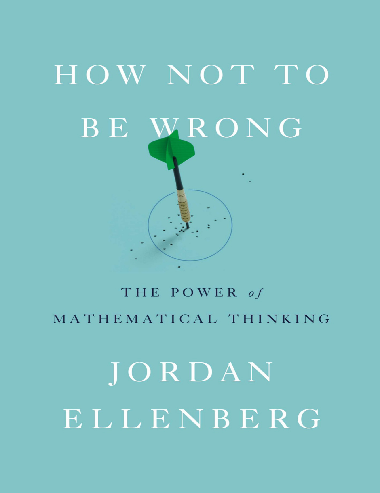

Somewhere in a classroom, a student is asking the question every math teacher dreads: When am I going to use this? The standard answer — you might need integrals in some future career — is a lie both teacher and student recognize as such. The real answer is better and stranger: math is not the integrals themselves but the thinking they build. Like an athlete doing weight training who will never use a barbell on the playing field, the student is developing a capacity for reasoning that will prove indispensable in places she cannot yet imagine. Mathematics is not a body of formulas to memorize but a way of seeing hidden structure beneath the messy surface of the world — "like wearing a pair of X-ray specs."
The book's central exhibit is Abraham Wald, a Jewish mathematician from Klausenburg who escaped Nazi Austria and joined the wartime Statistical Research Group in Manhattan — "the most extraordinary group of statisticians ever organized," where Frederick Mosteller, Leonard Jimmie Savage, and Milton Friedman was often the fourth-smartest person in the room. The military wanted to armor returning bombers where the bullet holes were concentrated — the fuselage and fuel system. Wald saw the problem everyone else missed: armor where the bullet holes aren't. The planes hit in the engine never came back. The holes on surviving planes marked the places that could absorb damage, not the places that needed protection.
Mathematics is the extension of common sense by other means. Jordan Ellenberg
Wald's insight looks like common sense in hindsight, and that is precisely the point. Math IS common sense, extended by rigorous methods to places common sense alone cannot reach. A six-year-old lying on the floor notices that a speaker grille of 6×8 holes can be read as 8 columns of 6 — discovering the commutativity of multiplication for himself. Calculus, probability theory, and statistical inference all grow from intuitions like this one, formalized and sharpened until they become powerful enough to tell a general where to put his armor. Without that rigor, the officers would have armored the wrong parts. Without the common sense, mathematics would be the sterile rule-following that the peevish calculus student believes it to be.
Ellenberg frames his book around four quadrants: ideas can be simple or complicated, shallow or profound. Most math taught in school lives in the simple-shallow quadrant (sine formulas) or the complicated-shallow one (ten-digit multiplication). The complicated-profound quadrant holds the great unsolved problems — Riemann, Fermat, Poincaré. This book lives in the fourth quadrant: simple and profound. Ideas accessible with pre-algebra but whose applications extend far beyond what anyone would call "mathematical." That is where the real power lies, and that is the mathematics everyone uses whether they know it or not.
During the Affordable Care Act debate, a Cato Institute blogger drew the relationship between government size and prosperity as a straight line sloping downward: more Swedish equals worse off. If the line is correct, the optimal policy is always at one extreme — shrink government to nothing. But suppose the real curve has a hump in the middle, peaking at some moderate level of government. Then America, sitting to the left of the peak, would rightly add programs while Sweden, sitting to the right, would rightly trim them. Both countries converging on the same optimum from opposite directions. The entire political disagreement reduces to a mathematical question: is the curve a line or not?
This is the Laffer curve, the most famous napkin doodle in economic history. At a 1974 dinner with Dick Cheney and Donald Rumsfeld, economist Arthur Laffer sketched the relationship between tax rates and government revenue. At 0% tax, revenue is zero. At 100% tax, revenue is also zero — nobody works if the government takes everything. Between those endpoints the curve must rise, peak, and fall. The relationship is necessarily nonlinear. If you happen to be on the right-hand downslope, cutting taxes actually increases revenue — a "politically peachy solution" that Jude Wanniski championed in his 1978 book The Way the World Works and that Ronald Reagan turned into policy.
Reagan had personal experience: as a wartime movie star facing a 90% income surtax, "you could only make four pictures and then you were in the top bracket, so we all quit working after about four pictures." But Greg Mankiw, a Republican economist who chaired Bush's Council of Economic Advisors, concedes that "subsequent history failed to confirm Laffer's conjecture." Reagan's cuts produced less revenue, not more. Personal income tax revenue per person fell 9% in real terms from 1980 to 1984, even as average income grew 4%. America was probably on the left side of the curve even in Reagan's era.
Which way you should go depends on where you already are. Jordan Ellenberg
Laffer himself was more modest than his followers. He drew no numbers on his napkin. In congressional testimony about the optimal tax rate: "I cannot measure it frankly, but I can tell you what the characteristics of it are." The curve merely says lower taxes could increase revenue under some circumstances — figuring out which circumstances "requires deep, difficult, empirical work, the kind of work that doesn't fit on a napkin." The false syllogism: it could be the case that lowering taxes increases revenue; I want it to be the case; therefore it is the case. That leap from possibility to certainty through desire is the essence of false linearity — assuming a straight line when the world is curved.
If the world is curved, why does anyone assume it is straight? Because in a very real sense, every curve is straight — at least locally. Archimedes understood this through the method of exhaustion: inscribe a square inside a circle, then an octagon, then a 16-gon, doubling the sides until the polygon becomes indistinguishable from the circle. The little fringe of difference gets "exhausted" by relentless iteration. An ant walking on a circle would think it was on a straight line. The slogan: straight locally, curved globally.
Newton generalized Archimedes's insight: every smooth curve, when you zoom in enough, looks like a line. Reduce your field of view to the infinitesimal — smaller than any size you can name but not zero — and what was almost a line becomes exactly a line. The slope of this line is the derivative, the central object of calculus. George Berkeley denounced Newton's infinitesimals as "the ghosts of departed quantities," and he had a point — the construction wasn't rigorous. But calculus works. Release a rock from a sling, and it flies off in exactly the direction the tangent line predicts. Two centuries later, Augustin-Louis Cauchy replaced Newton's ghosts with the precise notion of a limit, finally making calculus safe.
The cost of Cauchy's rigor is that we must accept 1 and 0.99999... as two names for the same number — synonyms, like "William" and "Bill." Cauchy was "an unwavering conservative and a royalist, but in his mathematics he was proudly revolutionary." He rewrote his syllabus at the École Polytechnique over everyone's objections, and the school placed note takers in his classroom to monitor him. Cauchy did not comply. He was not interested in the needs of engineers. He was interested in the truth.
One gets such wholesale returns of conjecture out of such a trifling investment of fact. Mark Twain, Life on the Mississippi
The danger of straight-line thinking becomes vivid in Mark Twain's parody: the Mississippi had been shortening by 1⅓ miles per year, so "any calm person" could see that a million years ago it was over a million miles long, and 742 years from now it would be a mile and three-quarters. Wonderful satire — but precisely the logic behind newspaper headlines like "Everyone in America will be overweight by 2048." Linear regression, the statistical technique that is to social science what the screwdriver is to home repair, makes it dangerously easy to draw a line through five data points and project it to absurdity. A missile's trajectory is a parabola; a line fit to five seconds of data will be catastrophically wrong after an hour.
A paper in the journal Obesity announced that by 2048, every American would be overweight. ABC News covered the "obesity apocalypse." The methodology was simple: plot the upward trend in obesity rates, draw a regression line, extend it until it hits 100%. The problem is that this line must eventually cross 100% and continue into the physically impossible. By 2060 it would give 109% of Americans overweight. The thin, as Ellenberg notes, "we have always with us." In fact, just four years after the paper, NHANES data showed the upward march had already begun to flatten.
Linear regression is a "marvelous tool, versatile, scalable, and as easy to execute as clicking a button on your spreadsheet." It finds the line closest to all the points. Each extra SAT point at North Carolina colleges corresponds to about $28 in additional tuition. But it is also dangerous. The authors of the obesity paper broke their data by ethnic group and sex, finding that black men's obesity rate was growing at half the overall rate — they wouldn't cross 100% until 2095. But if ALL Americans are overweight by 2048, where are the 20% of non-overweight black men? "Offshore?" The basic contradiction went unmentioned — "the epidemiological equivalent of saying there are -4 grams of water left in the bucket. Zero credit."
The Law of Large Numbers explains why South Dakota has the highest rate of brain cancer in America while its neighbor North Dakota has one of the lowest. Both are tiny states. With small sample sizes, random variation dominates, pushing small populations to both extremes. In a coin-flipping contest, a team flipping 10 coins each will produce both the highest and lowest percentages of heads, while a team flipping 100 will cluster around 50%. The typical discrepancy from 50-50 grows with the square root of the sample size — so 100 times as many coins produces discrepancies only 10 times as large in absolute terms, but proportionally much smaller. Abraham de Moivre discovered that these discrepancies follow a perfect bell curve — "the gendarme's hat," as Francis Ysidro Edgeworth unsuccessfully proposed calling it.
The law of averages — five heads in a row means tails is "due" — is flatly false. Coins have no memory. The Law of Large Numbers works not by balancing past results but by diluting them. After 10 heads, flip 1,000 more times: you will get roughly 500 heads, making the total 510 out of 1,010 — close to 50%. The past didn't change; it just got swamped by new data.
When 1,074 Israelis were killed by Palestinians from 2000 to 2005, commentators scaled the figure to American population: "the proportional equivalent of more than 50,000 dead." This "how much is that in dead Americans" calculation is standard rhetoric. But push the logic: the same deaths are proportionally equivalent to 223,000 Chinese, 300 Slovenes, or "one or two Tuvaluans." When two men are left at the bar and one punches the other, it is not equivalent to 150 million Americans getting simultaneously punched in the face. Proportion is the wrong lens when the absolute numbers are small. As Ellenberg argues, if the magnitude of a disaster makes it natural to speak of "survivors," then proportional thinking is appropriate. You can call any Tutsi in Rwanda a survivor (75% were killed). But it is absurd to call someone in Seattle a "survivor" of the World Trade Center attack.
Stephen Pinker's Better Angels of Our Nature makes the case that the world has grown less violent. The 20th century looks catastrophic only because populations are large — the Thirty Years' War killed 1 in 100 people on Earth, which today would be 70 million, dwarfing both world wars. Whether such comparisons illuminate or distort depends entirely on what question you are asking. Atrocities form a "partially ordered set" — some pairs can be meaningfully compared, others cannot. The question of whether one war was worse than another "is fundamentally unlike the question of whether one number is bigger than another. The latter question always has an answer. The former does not."
Between 1990 and 2008, the United States gained 27.3 million net jobs. Of these, 26.7 million (98%) came from the nontradable sector — government, health care, retail, food service. This was widely reported as proof that globalization had gutted tradable employment. But the tradable sector grew by only 620,000 jobs net, and between 2000 and 2008 it actually lost 3 million while the nontradable sector added 7 million — making the nontradable sector responsible for 175% of total growth. More pie than plate.
Dividing one number by another is mere computation; figuring out what you should divide by what is mathematics. Jordan Ellenberg
The problem is percentages with negative numbers. Steven Rattner reported that 93% of additional income in 2010 went to the top 1%. But the top 10%-but-not-1% captured 17%. That sums to over 100% — because the bottom 90% actually lost ground. Mitt Romney's campaign claimed "women account for 92.3% of all jobs lost under Obama." Technically correct for the chosen start date. Shift the start by one month and women account for over 3,000% of job losses. "That would have signaled to any but the thickest voters that this percentage was somehow not the right measure." The real story: men took it worse in the recession and gained more in the recovery, so their losses and gains nearly canceled. Women's didn't. The 92.3% figure was, as the Washington Post put it, "true but false."
You receive ten consecutive correct stock predictions by mail. On week eleven, the broker asks for your money. The odds of ten correct picks by chance are 1 in 1,024 — surely this is genius. But the broker sent 10,240 letters on week one: half predicting up, half down. After each round, half the recipients got a correct prediction and the others were discarded. After ten weeks, ten people have seen ten perfect picks — "no matter what the stock market does." This is the Baltimore Stockbroker parable, and it explains everything from mutual fund "incubation" (companies launch many funds privately and publicize only the winners) to the Bible Code.
In the mid-1990s, Eliyahu Rips and colleagues at Hebrew University searched Genesis for "equidistant letter sequences" — characters plucked at regular intervals — and found the names and dates of 32 notable rabbis appearing in proximity far more often than chance would predict. Published in Statistical Science as "a challenging puzzle," it became Michael Drosnin's 1997 bestseller The Bible Code, supposedly predicting Rabin's assassination and the Gulf War.
Brendan McKay of Australia and Dror Bar-Natan cracked the code: the researchers had freedom in which name to search for each rabbi (medieval rabbis had no passports — "Rabbi Avraham" or "HaMalach" or both?). With equally valid alternative names, the Torah lost its magic — but War and Peace in Hebrew suddenly nailed the rabbinical dates. Not because Tolstoy encoded rabbis, but because with enough wiggle room, any long text produces impressive matches. Drosnin dared critics to find assassination predictions in Moby Dick; McKay promptly found JFK, Indira Gandhi, Leon Trotsky, and Drosnin himself.
The deeper lesson: if we reject Bible codes despite their passing standard significance tests, what does that say about the reliability of standard significance tests? "It says you ought to be a little worried about them."
Craig Bennett presented at the 2009 Human Brain Mapping conference a study titled "Neural correlates of interspecies perspective taking in the post-mortem Atlantic Salmon." A dead fish was placed in an fMRI scanner, shown photographs of humans in social situations, and was found to exhibit brain activity correlated with correct emotional assessment. The fish was 18 inches long, weighed 3.8 pounds, and "was not alive at the time of scanning."
The point was deadly serious. An fMRI divides the brain into tens of thousands of tiny volume units called voxels. Random noise in each voxel means some will spike at exactly the right moment by pure chance. Bennett found two voxel clusters in the salmon "empathizing" with humans — one in the medial brain cavity, one in the upper spinal column. Most neuroimaging articles he surveyed did not use multiple-comparisons correction, the statistical safeguard against this exact kind of false positive.
B.F. Skinner fell into the same trap with Shakespeare. As a frustrated young novelist (he had received encouraging words from Robert Frost at the Bread Loaf conference), Skinner turned to behaviorism and tried to prove that Shakespeare's alliteration was no more deliberate than random letter-picking. His test failed to detect a significant pattern. But the test was simply too weak — "underpowered," like looking at planets through binoculars. Shakespeare used alliteration with such restraint that a blunt instrument couldn't pick it up. George Gascoigne had mocked ham-fisted alliteration a generation earlier: Crambe bis positum mors est — cabbage served twice is death.
The same story played out with basketball's "hot hand." Gilovich, Vallone, and Tversky analyzed the 1980-81 Philadelphia 76ers and found no evidence that players shoot better after making consecutive shots. Tversky boasted: "I've been in a thousand arguments over this topic. I've won them all, and I've convinced no one." But Korb and Stillwell (2003) showed the test was underpowered — it would miss a genuine hot hand more than 75% of the time. And Attali (2013) found that players who make a three-pointer attempt harder shots next, canceling out the streak. The hot hand may be real but invisible to the standard test because confidence breeds overreach.
The null hypothesis significance test works by reductio ad absurdum — assume the thing you want to disprove, show it leads to something improbable, and reject it. If I claim 200 children were killed by guns in DC in 2012, but DC had only 88 total homicides, the claim is impossible. That is a clean reductio. Significance testing is the fuzzy version: assume the null hypothesis, compute the probability of your observation (the p-value), and reject if p is small enough. "Reductio ad unlikely."
But impossible and improbable are "not the same — not even close." Joseph Berkson of the Mayo Clinic skewered this with a thought experiment: 50 subjects, hypothesized as human. One is an albino (1 in 20,000 chance). The p-value is below 0.0025 — well under the 0.05 threshold. By NHST logic, reject the null hypothesis. The subjects aren't human. Absurd. Or: North Carolina's Cash 5 lottery drew the same five numbers twice in three days. Any specific pair of draws has a 1 in 300 billion chance. Should we call the lottery rigged every Thursday?
It is probable that improbable things will happen. Aristotle
R.A. Fisher saw the significance test as "the detective, not the judge." A significant finding is the beginning of investigation, not the end. Near the end of his life, he wrote: "No scientific worker has a fixed level of significance at which from year to year, and in all circumstances, he rejects hypotheses; he rather gives his mind to each particular case in the light of his evidence and his ideas." The rigid 0.05 threshold that dominates modern science would have appalled even its creator.
An xkcd comic captures the problem perfectly: scientists test twenty colors of jelly beans for a link to acne. Nineteen show no effect (p > 0.05). Green jelly beans get p < 0.05. Newspaper headline: "GREEN JELLY BEANS LINKED TO ACNE! 95% Confidence." If twenty independent labs study the same phenomenon, the one that gets lucky is the one that publishes. The nineteen failures go into the file drawer. "They got lucky — but they don't know they got lucky."
P-hacking, a term coined by Uri Simonsohn, describes scientists with p = 0.06 who tweak their analysis — delete an outlier, control for age, control for weather — until they reach the magic 0.05. "Torturing the data until it confesses." The telltale signature appears when you graph p-values from published papers: there should be a smooth distribution, but instead there is a suspicious upward bump just below 0.05. "That slope is the shape of p-hacking." Scientists who can't hack below 0.05 resort to phrases like "almost statistically significant," "leaning toward significance," or the poignant "hovers on the brink of significance."
The reform movement has begun. Psychological Science started publishing Registered Replication Reports — studies accepted before results are known. The Many Labs project found that 10 of 13 high-profile findings survived replication. But the deeper issue remains: living by the 0.05 threshold is like defining "recession" so rigidly that you'd ignore unemployment, housing starts, and consumer spending if the GDP technical definition weren't met. Science needs judgment, not just thresholds.
Target's algorithm correctly inferred that a Minnesota teenager was pregnant before her father knew, based on her purchases of unscented lotion, mineral supplements, and cotton balls. Impressive — but maybe we should worry more about crappy algorithms than eerily good ones. More data doesn't always help. Weather is chaotic: Edward Lorenz discovered that "one flap of a sea gull's wing would be enough to alter the course of the weather forever," imposing a hard limit of about two weeks on forecasting regardless of data volume. For human behavior, we lack even a good mathematical model "and may never have one."
Bayesian inference offers a different framework. Three theories about a roulette wheel: RED (60% biased red), FAIR (50/50), BLACK (60% biased black). Start with a prior: 90% FAIR, 5% each RED and BLACK. Observe five reds in a row. The likelihood of this under RED is 7.76%, under FAIR 3.125%, under BLACK 1.024%. Update: RED climbs from 5% to 12%, FAIR drops from 90% to 86.5%, BLACK falls to 1.5%. The passage from prior to posterior is governed by Bayes's Theorem. How much the evidence moves you depends on where you started: a cynic who assigns equal priors would jump to 65% RED, while a trusting soul gives RED only 2.5%.
This is why William Paley's watchmaker argument for God fails as pure math. Using Bayesian reasoning with flat priors, the existence of complex life overwhelmingly supports a designer. But add GODS (a committee of gods — "I'm thinking pandas") with the same prior, and GODS beats GOD. Add SIMS (Nick Bostrom's simulation hypothesis) and SIMS wins decisively. "If we took this approach seriously, we would tell our tenth graders" that the simulation hypothesis is the best-supported explanation for existence. "Think the school board would go for this?" Ellenberg concludes honestly: "On this matter, math is silent." Pascal in Pensées: "God is, or He is not. But to which side shall we incline? Reason can decide nothing here."
Expected value — the probability- weighted average of all possible outcomes — is not the value you expect. Buy a $1 ticket in a 10-million- combination lottery with a $6 million jackpot, and the expected value is 60 cents. You will almost certainly win nothing; 60 cents is just what you'd average over millions of plays. Adam Smith called lotteries "a tax on the stupid," though his reasoning was flawed. Edmond Halley (the comet guy) was among the first to apply expected value rigorously: Parliament was selling life annuities at the same price regardless of the buyer's age — a grandfather paid the same as a child. Halley used mortality statistics to show how absurd this was.
Even when a Powerball jackpot swells to $337 million and the raw expected value exceeds the $2 ticket price, the bet stays bad. With 75 million players, there is a 35% chance someone else also wins, halving the prize. After taxes, lump-sum discount, and state garnishment for back child support (one memorable winner discovered his current girlfriend didn't know about his ex-girlfriend's child — "the weekend did not go as planned"), the expected return falls well below breakeven.
The exception that proves the rule: Cash WinFall, a Massachusetts lottery launched in 2004 where unjackpotted prize money "rolled down" to enhance lower tiers. On roll-down days, a $2 ticket had an expected value of $5.53. James Harvey, an MIT senior, discovered the anomaly during an independent study project and formed a syndicate called Random Strategies. Medical researcher Ying Zhang formed a rival group, eventually quitting doctoring to play full-time. Seventy-year-old retiree Gerald Selbee drove from Michigan with his wife Marjorie, buying 60,000 tickets at a time. By 2007, over a million tickets per roll-down were flowing to three cartels.
If gambling is exciting, you're doing it wrong. Jordan Ellenberg
Random Strategies' masterstroke came in August 2010. The jackpot sat at $1.675 million — below the $2M roll-down threshold. Other cartels waited. Harvey quietly bought 700,000 tickets over the weekend, pushing the jackpot past $2.1 million. His group held 90% of the tickets and made $700,000 profit — a 50% return on a $1.4 million weekend investment. The lottery eventually installed an early-warning system, and Boston Globe reporters broke the story in 2011. The state's defense? Harvey had visited lottery offices in January 2005, before his first bet, and they had told him: "Sure, kid, knock yourself out."
This was not new. In 18th-century France, deputy finance minister Michel Le Peletier des Forts botched the math on a bond-lottery scheme, creating positive expected value. La Condamine and Voltaire organized a ticket cartel, writing cheeky mottoes on their entries: "All men are equal!" and "Long live M. Peletier des Forts!" They got rich for life. "What — you thought Voltaire made a living writing perfectly realized essays and sketches? Then, as now, that's no way to get rich."
George Stigler, the 1982 Nobel laureate in economics, declared: "If you never miss the plane, you're spending too much time in airports." The optimal strategy isn't zero missed flights — it's whatever miss rate minimizes total discomfort. Arrive two hours early and you miss 2% of flights but waste two hours every time. Arrive one hour early and you miss 15% but save an hour of tedium. The math: if a missed flight costs 6 utils of misery and each airport hour costs 1, the sweet spot is 90 minutes early (expected cost: -1.8 utils). If you hate missing flights (-20 utils), you should arrive earlier — but even then, not three hours early (-3 utils is worse than any option).
The same logic applies to government waste. The Social Security Administration paid $31 million to 1,546 dead people — but that is 0.004% of total disbursements. Eliminating the last sliver of waste costs more than the waste itself. "What's the right amount of the taxpayer's money to be wasting?"
Pascal's Wager pushes expected value to its limits. If God exists, the reward for belief is infinite (eternal life). Even with a tiny probability, infinity times anything is still infinity. So the expected value of believing is infinite, while the cost is finite. You should believe. But the St. Petersburg paradox (flip a coin until tails; if tails on flip k, win 2k ducats) shows this logic breaks down: the expected value is infinite, yet no one would pay a million ducats to play. Daniel Bernoulli's resolution: utility is not money. A ducat means more to a peasant than to a prince. Utility grows like the logarithm — twice as much money is not twice as good. Under logarithmic utility, the St. Petersburg game is worth exactly 2 utils. Finite and small.
Daniel Ellsberg — before the Pentagon Papers — spent years picking at the foundations of expected utility theory. His famous paradox involves an urn with 30 red balls and 60 black/yellow balls in an unknown ratio. People prefer betting on red (known 1/3 probability) over black (unknown), and prefer NOT-RED (known 2/3) over NOT-BLACK (unknown). But RED + NOT-RED and BLACK + NOT-BLACK both equal a guaranteed payoff. How can one guaranteed outcome be preferred to an identical one? The answer: people are averse not just to risk (known unknowns) but to uncertainty (unknown unknowns). Expected utility theory can't capture the difference.
Selbee used Quic Pic (random numbers) for his Cash WinFall tickets. Harvey picked numbers by hand. Both had the same expected value — so why bother? The answer is variance. A $50,000 sure thing and a 50/50 bet on losing $100,000 or gaining $200,000 have the same expected value, but the bet can ruin you. The richer you are, the more risk you can afford. This is why picking up pennies in front of a steamroller — strategies with small frequent gains and rare catastrophic losses — is so dangerous. If you're down a million, it's your problem; if you're down five billion, it's the government's problem (Long-Term Capital Management, 2008).
Harvey's hand-picked tickets exploited a gorgeous piece of mathematics. In a simplified 7-ball lottery (pick 3, also win for matching 2), 35 possible combinations exist. Selbee's 7 random tickets yield an expected 2.4 "deuces" but with wide variance. Harvey's 7 tickets — 124, 135, 167, 257, 347, 236, 456 — guarantee either the jackpot or exactly 3 deuces every time. Same expected value, drastically lower variance. The secret: these seven triples are the seven lines of the Fano plane, the smallest projective geometry. Every pair of points lies on exactly one line, so every pair of winning numbers appears on exactly one ticket.
The same structure underlies Richard Hamming's error-correcting codes. A 4-bit message gets 3 check bits, making a 7-bit codeword. The 16 valid codewords differ in at least 3 positions, so a single-bit error can always be corrected. The structure governing which bits check which IS the Fano plane. Claude Shannon founded information theory in 1948, proving that below a channel's capacity, codes exist that make errors arbitrarily rare. The geometry of Renaissance painting (parallel train tracks meeting at a vanishing point), the mathematics of lottery strategy, and the engineering of deep-space communication are all the same mathematics. Alexander Grothendieck described mathematical progress as the sea rising around a stone: "Nothing seems to happen, nothing moves... yet it finally surrounds the resistant substance."
Francis Galton, Darwin's half-cousin and Victorian polymath, planted sweet peas sorted by weight and discovered something strange: offspring of heavy seeds were heavy but not as heavy as their parents. Offspring of light seeds were light but not as light. The distribution "regressed" toward the average. He found the same pattern in human height: tall parents have tall children, but not as tall. Short parents have taller-than-them children. Galton had discovered regression to the mean, and to display his data he invented the scatterplot.
The crucial insight is that this is not a force pulling things toward mediocrity. It is an arithmetic necessity that occurs whenever two variables are correlated but not perfectly so. If the correlation between parent and child height is 0.5, a parent who is 4 inches above average will have a child who is on average only 2 inches above average. The slope of the regression line is less than 1, less than the 45-degree diagonal. That flattened slope IS regression to the mean.
Horace Secrist's 1933 book The Triumph of Mediocrity in Business tracked top-performing businesses over time and found they became more average. He interpreted this as a law of nature — competition drives firms toward mediocrity. Harold Hotelling's review in JASA was devastating. The crucial observation: if you select stores with the highest performance in 1922 and look backward to 1916, they were also closer to mediocre — because in 1922 they were both lucky and good, but their luck in 1916 was different. If regression to mediocrity were caused by competitive forces, those forces would have to work backward in time. Secrist wrote a contentious rebuttal; Hotelling stopped being nice: "To 'prove' such a mathematical result by a costly and prolonged numerical study... is analogous to proving the multiplication table by arranging elephants in rows and columns."
Biologists are eager to think regression stems from biology, management theorists want it to come from competition, literary critics ascribe it to creative exhaustion — but it is none of these. It is mathematics. Jordan Ellenberg
Every April, ESPN reports which players are "on pace" for record-shattering seasons. Matt Kemp hit 9 home runs in 17 games — projected to 86 over 162 games. Derek Jeter, asked about being on pace to break Pete Rose's record, told the New York Times: "One of the worst phrases in sports is 'on pace for.'" The league leader in home runs is a good hitter who has also been lucky. Only that lucky part regresses. Ellenberg checked first-half American League home run leaders from 1976-2000: sluggers hit only 60% as many homers in the second half as the first. The "Home Run Derby Curse" is not a curse. It is arithmetic.
The same fallacy infected the Scared Straight program, where juvenile offenders toured prisons. One program reported participants were arrested half as often afterward. But the kids were selected for being the worst behaved — regression guarantees they'll improve whether you intervene or not. When randomized trials were conducted, the program actually increased antisocial behavior. "Maybe it should have been called Scared Stupid."
To visualize the interplay of heredity and chance, Galton plotted father-son height data on a grid and drew curves of equal density — isopleths . To his astonishment, these curves were all ellipses, nested within each other, centered on the point where both parent and child had average height. It was the contour map of a perfectly elliptical mountain — the bivariate normal distribution . The eccentricity of the ellipse measures how strongly one variable determines the other: a very skinny ellipse means high correlation (heredity dominant), a round one means low correlation (chance dominant). A perfect line is the most eccentric ellipse possible. A circle means zero correlation. Galton called his measure correlation.
Alphonse Bertillon had devised a system for identifying criminals by body measurements — head length, finger length, foot length — filed on cards. Galton asked: could you identify suspects more accurately with more measurements? Not necessarily. Men with big hands tend to have big feet. Correlated measurements provide diminishing returns. The best measurements are those uncorrelated with each other. Galton championed fingerprinting instead, which proved its worth when Vincenzo Peruggia stole the Mona Lisa from the Louvre in 1911: his Bertillon card was on file but useless, while the fingerprint he left on the discarded frame would have identified him immediately.
Karl Pearson generalized Galton's correlation to any pair of variables, revealing a beautiful geometric interpretation: correlation is the cosine of the angle between two vectors. Perpendicular vectors (90 degrees) have zero correlation — "orthogonal," a word creeping from mathematics into wider English. Justice Scalia encountered it for the first time during oral argument and was delighted. Ellenberg roots for it to catch on: "It's been a while since a mathy word really broke out into demotic English."
Correlation is not transitive. Rich states vote Democratic. Rich people tend to live in rich states. But rich people still vote more Republican within most states. The apparent paradox dissolves: being rich correlates with living in a rich state, and rich states correlate with Democratic voting, but the chain does not close. The same non-transitivity explains why niacin raises HDL cholesterol but does not prevent heart attacks: it boosts HDL through a mechanism unrelated to the one connecting HDL to heart health. A large National Heart, Lung, and Blood Institute trial (halted in 2011) confirmed the failure. "In the real world, it's next to impossible to predict what effect a drug will have on a disease, even if you know a lot about how it affects biomarkers."
At the turn of the 20th century, lung cancer was vanishingly rare. By 1947, it accounted for nearly a fifth of cancer deaths among British men — a fifteenfold increase in a few decades. Richard Doll and A. Bradford Hill studied 649 male lung cancer patients in 20 London hospitals and found that only TWO were nonsmokers. A control group of 649 men hospitalized for other complaints had 27 nonsmokers. The correlation was overwhelming. But as Doll and Hill wrote, the association would also occur "if carcinoma of the lung caused people to smoke or if both attributes were end-effects of a common cause."
R.A. Fisher, founding hero of modern statistics, was a vigorous skeptic. His "constitutional hypothesis": perhaps a genetic factor predisposed people both to lung cancer and to the urge to smoke. The pre-cancerous state involves chronic inflammation, which might drive people to seek the soothing comfort of cigarettes. "To take the poor chap's cigarettes away from him would be rather like taking away his white stick from a blind man." Fisher was both a rigorous statistician demanding all possibilities be considered and a lifelong smoker with affection for his habit.
Epidemiologist Jan Vandenbroucke on Fisher's tobacco papers: "I found extremely well- written and cogent papers that might have become textbook classics for their impeccable logic and clear exposition... if only the authors had been on the right side." By 1964, Surgeon General Luther Terry's commission concluded smoking caused lung cancer, based on converging evidence: consistent association, dose- response relationship, cancer at point of contact (cigarettes cause lung cancer, pipes cause lip cancer), and ex-smokers having less cancer than continuing smokers.
Refraining from making recommendations at all, on the grounds that they might be wrong, is a losing strategy. It's a lot like George Stigler's advice about missing planes. If you never give advice until you're sure it's right, you're not giving enough advice. Jordan Ellenberg
Berkson's fallacy shows how spurious correlations arise from conditioning on a common effect. In a hospital, non-diabetics are there because of their blood pressure, so 100% have high blood pressure — creating a phantom negative correlation between diabetes and hypertension that does not exist in the general population. The same logic explains why handsome men seem like jerks: niceness and handsomeness are independent in the general population, but your dating pool (the "Acceptable Triangle") screens for one or the other. Within that pool, the handsomest men run the full personality spectrum, but the nicest men are only averagely handsome — the ugly nice guys barely squeezed in. The negative correlation is real in your experience but a pure artifact of selection.
In January 2011, 77% of Americans said cutting spending was the best way to handle the deficit. But when asked about 13 specific categories of government spending, in 11 of them more people wanted to increase spending than cut it. Only foreign aid and unemployment insurance — under 5% of the budget combined — drew the ax. Paul Krugman: "People want spending cut, but are opposed to cuts in anything except foreign aid." The paradox is not that Americans are stupid. Each individual voter has a perfectly rational position: there is plenty of waste to cut — just not my programs. The "infantile average American" who demands everything and nothing simultaneously does not exist. What exists is a population with diverse, coherent preferences that aggregate into incoherence.
The same structure appears everywhere. In October 2010, 52% of Americans opposed the ACA. But the breakdown: 37% wanted repeal, 10% wanted it weakened, 15% wanted to keep it, 36% wanted to expand it. Leave it, kill it, or make it stronger — each option was opposed by a majority. Fox News: "Majority opposes Obamacare!" MSNBC: "Majority wants to preserve or strengthen Obamacare!" Both true. Both incomplete. This is the Condorcet paradox , discovered by the Marquis de Condorcet in the late 18th century: majority preferences can cycle. A beats B, B beats C, C beats A. There is no "people's choice."
Florida 2000 makes the paradox concrete: Bush 48.85%, Gore 48.84%, Nader 1.6%. Virtually every Nader voter preferred Gore to Bush, so a solid 51% majority preferred Gore — but Nader's presence as an "irrelevant alternative" gave the election to Bush. Even slime molds fall for this: the single-celled organism Physarum polycephalum splits evenly between two food options, but adding a clearly inferior third option changes the ratio three-to-one. The Borda count (rank all candidates, assign points) would have elected Gore, but it has its own problems: a third candidate can still flip the winner. Instant-runoff voting eliminates the last-place candidate and redistributes ballots. Burlington, Vermont tried it in 2009 — the centrist everyone liked as a second choice was eliminated first, producing three different winners under three different methods.
Kenneth Arrow's impossibility theorem (1951 PhD thesis, eventual Nobel Prize) proved that no voting system can simultaneously satisfy even a modest set of fairness criteria. It would have disappointed Condorcet as deeply as Gödel's incompleteness theorems disappointed Hilbert. Condorcet, "le mouton enragé" (the rabid sheep), never found his perfect system. Forced into hiding during the Terror, he wrote his astonishingly optimistic Sketch for a Historical Picture of the Progress of the Human Mind, predicting a world free of prejudice and hunger — then was captured in March 1794 and dead within two days. His legacy: the conviction that quantitative "social mathematics" ought to guide government. "Condorcet's idea is so thoroughly intertwined with the modern way of doing political business that we hardly see it as a choice. But it is a choice. I think it's the right one."
For two thousand years, mathematicians tried to prove Euclid's fifth axiom — the parallel postulate — from the first four. It felt inelegant, more complicated than the others, like a stain on an otherwise perfect floor. Farkas Bolyai, a Hungarian nobleman, wasted years on the problem and begged his son János not to follow: "You must not attempt this approach to parallels. I know this way to the very end. I have traversed this bottomless night, which extinguished all light and joy in my life."
János ignored his father. By 1823 he had the answer: what if the parallel postulate were false? No contradiction follows. There is another geometry where the first four axioms hold but the fifth does not. "Out of nothing I have created a strange new universe." Simultaneously, Nikolai Lobachevskii reached the same conclusion in Russia. Gauss had formulated similar ideas privately, and when told of Bolyai's work, said: "To praise it would amount to praising myself."
Riemann observed an even simpler non-Euclidean geometry: the sphere. Points are pairs of antipodal points, lines are great circles. The first four axioms hold perfectly, but the fifth fails: there are NO parallel lines, because all great circles intersect. If the fifth axiom could be derived from the first four, spheres would harbor a contradiction — but they don't. So the fifth axiom is independent. In Bolyai's hyperbolic geometry, the opposite holds: through any external point pass infinitely many parallel lines.
The practical consequence is formalism: ask not what mathematical objects "are" but what the axioms define them to be. A point can be a frog, a kumquat — anything that satisfies the rules. Any theorem proved from the first four axioms alone is automatically true on spheres, planes, and hyperbolic spaces alike. Post-Einstein, non-Euclidean geometry IS the geometry of spacetime. Justice Scalia is the fiercest advocate of legal formalism: "Long live formalism. It is what makes a government a government of laws and not of men." But even Scalia occasionally concedes that absurd results require departing from strict textualism — just as no scientist really treats a dead salmon brain scan the same as a promising clinical trial, even when both have p = 0.03.
A scientist can hardly encounter anything more undesirable than, just as a work is completed, to have its foundation give way. Gottlob Frege, postscript to Grundgesetze
David Hilbert dreamed of rebuilding all of mathematics from bedrock axioms and proving the whole edifice consistent. Then Bertrand Russell wrote to Gottlob Frege with a paradox: the set of all sets that do not contain themselves either does or doesn't contain itself, and both answers produce a contradiction. Frege's second volume was already in press; his postscript recording the disaster may be "the saddest sentence ever written in a technical work of mathematics." In 1931, Gödel's second incompleteness theorem proved that no finitary proof of arithmetic's consistency could exist, killing Hilbert's program with a single stroke.
Yet the cult of genius that surrounds figures like Ramanujan — the prodigy from southern India who received theorems in visions from the goddess Namagiri — is misleading. Ramanujan is famous precisely because he is so uncharacteristic. Hilbert was a good but not exceptional student. The cult damages math education: students quit because someone in class is ahead of them. "I've never heard a student say, 'I like Hamlet, but I don't really belong in AP English — that kid who sits in the front row knows all the plays.'" What we need are "more math majors who DON'T become mathematicians — more math major CEOs, more math major senators." Genius, Ellenberg insists, is not a kind of person. "Genius is a thing that happens."
Between his sophomore and junior years, Ellenberg modeled tuberculosis prevalence through 2050 for a public health researcher. Each empirical input had small uncertainties — maybe the transmission rate was 20%, maybe 13%, maybe 25%. These local uncertainties percolated through the simulation, feeding back into each other, until by 2050 the model could produce anything from zero TB to universal infection. The researcher didn't want to hear that the model was useless. "Just give me your best guess." Ellenberg gave in. "I have no doubt he told many people, afterward, that X million people were going to have tuberculosis in 2050. And I'll bet if anyone asked him how he knew this, he would say, I hired a guy who did the math."
Theodore Roosevelt's famous Sorbonne speech declares that "it is not the critic who counts" — only the man in the arena matters. But Ellenberg offers a counterexample: Abraham Wald "went his whole life without lifting a weapon in anger, but who nonetheless played a serious part in the American war effort, precisely by counseling the doers of deeds how to do them better. He was unsweaty, undusty, and unbloody, but he was right. He was a critic who counted."
Against Roosevelt's brash certainty, Ellenberg places John Ashbery's poem "Soonest Mended": "For this is action, this not being sure, this careless / Preparing, sowing the seeds crooked in the furrow." Not being sure is the move of a strong person, not a weakling — "a kind of fence-sitting / Raised to the level of an esthetic ideal." Mathematics gives us a way of being unsure in a principled way: "I'm not sure, this is why I'm not sure, and this is roughly how not-sure I am."
The paladin of principled uncertainty is Nate Silver, "a kind of Kurt Cobain of probability." Traditional pundits said "Obama will win" or "Romney will win." Silver said: "Either one might win, but Obama is substantially more likely." Politico's Dylan Byers complained that Silver "often gives the impression of hedging." "What Silver offers isn't hedging; it's honesty." When the weather report says 40% chance of rain, you don't lose faith in meteorology when it rains. Silver was being uncertain, rigorously uncertain, in public — and the public ate it up. He expected to get about three states wrong. He got all fifty right.
To do mathematics is to be, at once, touched by fire and bound by reason. This is no contradiction. Logic forms a narrow channel through which intuition flows with vastly augmented force. Jordan Ellenberg
The lessons of mathematics are simple and there are no numbers in them. There is structure in the world. We can hope to understand some of it. Our intuition is stronger with a formal exoskeleton than without one. Mathematical certainty is one thing; the softer convictions of everyday life are another; and we should keep track of the difference if we can. "When are you going to use this? You've been using mathematics since you were born and you'll probably never stop. Use it well."
Wald's bullet-hole insight applies directly to evaluating investment performance. Morningstar's Large Blend funds returned 178% average from 1995-2004 — but only counting survivors. Including dead funds, the return drops to 134%. The Baltimore Stockbroker parable explains mutual fund "incubation" perfectly: companies launch many funds privately, publicize only the winners, and mercy-kill the rest. Any time you evaluate a track record, ask how many chances the manager had to produce that record.
Last year's best-performing fund is like the first-half home run leader — a combination of skill and luck, where only the skill persists. Running backs who sign big contracts after a great season tend to record fewer yards per carry the next year. They were selected because of an unusually good year. The same arithmetic governs stock-picking contests, hedge fund of the year awards, and any ranking based on a single period's performance.
A positive-expected-value trade that can wipe you out is worse than a lower-EV trade with manageable variance. "Picking up pennies in front of a steamroller" — small consistent gains with occasional catastrophic losses — describes every blow-up in leveraged finance history. Cash WinFall's cartels reduced variance by hand-picking combinatorially optimal tickets. Diversification in a portfolio serves exactly the same function.
A biomarker correlates with health. A drug correlates with the biomarker. But the drug may not correlate with health — because correlation is not transitive. The same applies to factor investing: if momentum correlates with returns and a new ETF correlates with momentum, that doesn't mean the ETF will outperform. The mechanism by which the ETF captures momentum matters as much as the correlation itself.
Extrapolating a trend line is the single most common analytical error in markets. "Everyone will be overweight by 2048" is the epidemiological version of "this stock will grow at 15% forever." Nonlinearity is the rule, not the exception: earnings growth rates, subscriber counts, commodity prices — every straight-line projection eventually curves. The question is not whether it will curve but when.
Nate Silver's approach — stating probabilities rather than predictions — is exactly what good risk management requires. A trade thesis with 65% conviction is not hedging; it's honesty. Sizing positions to match your actual confidence, rather than treating every thesis as a certainty, is the mathematical way not to be wrong.
Not a set of arbitrary rules but common sense formalized and sharpened. The officers' instinct was to armor the bullet holes; Wald's mathematics showed why the instinct was backward. Without rigor, common sense leads you astray. Without common sense, math is sterile computation.
Linear extrapolation is the default mode of human reasoning and the source of most analytical errors. The Laffer curve, obesity projections, baseball pace statistics, and Mark Twain's Mississippi all illustrate the same principle: straight locally, curved globally.
A p-value below 0.05 does not mean the result is real. It means the result would be unlikely if the null hypothesis were true. With enough tests, enough wiggle room, or enough data, anything becomes significant. The dead salmon proves it.
Not a force, not biology, not competition. Whenever two variables are correlated but not perfectly so, extreme values in one will correspond to less extreme values in the other. Secrist's businesses, Scared Straight kids, first-half home run leaders — all regressing, all inevitably.
Every educated person knows the first half. The second half is equally important: A correlates with B, B correlates with C, but A and C may be unrelated. Niacin raises HDL but doesn't prevent heart attacks. Rich states vote Democratic but rich people vote Republican.
Arrow's theorem proves it mathematically. Condorcet's paradox demonstrates it concretely. Every aggregation of individual preferences into collective "will" involves trade-offs. Recognizing this is not cynicism but mathematical maturity.
"I'm not sure, this is why I'm not sure, and this is roughly how not-sure I am." Principled uncertainty — quantifying what you don't know — is more honest, more useful, and more powerful than false certainty. It is, as Ashbery wrote, a form of action.
Fisher never intended p = 0.05 to be a rigid cutoff. The threshold has become a gatekeeper that rewards p-hacking, punishes honest uncertainty, and fills journals with results that are "statistically significant" but practically meaningless. A dead fish can achieve p < 0.05 in an fMRI scanner.
When the margin is smaller than the noise (spoiled ballots, broken machines, confusing layouts), the "winner" is determined by chance anyway. A coin flip would at least be honest about it. The signal is already lost in the noise.
Ellenberg's TB model: each additional empirical input introduced its own uncertainty, and these uncertainties compounded through feedback loops until the model could predict anything. In chaotic systems, more data does not always mean better predictions.
If eggplant is 75% likely to cause heart failure, recommending against it saves an expected 700 lives per year even if the recommendation turns out to be wrong 25% of the time. Never giving advice until you're certain means never giving enough advice.
The cult of the lone mathematical genius (Ramanujan, Nash, Galois) is romantic but wildly inaccurate. The greatest flowering of mathematical knowledge came from the collective efforts of many people, none of whom were Gauss. "It takes a thousand men to invent a telegraph," said Twain, "and the last man gets the credit."
Math is like an atomic-powered prosthesis that you attach to your common sense, vastly multiplying its reach and strength. Jordan Ellenberg
The significance test is the detective, not the judge. Jordan Ellenberg, paraphrasing R.A. Fisher
I've been in a thousand arguments over this topic. I've won them all, and I've convinced no one. Amos Tversky, on the hot hand
Mathematics is the extension of common sense by other means. Jordan Ellenberg, paraphrasing Clausewitz
Ever tried. Ever failed. No matter. Try again. Fail again. Fail better. Samuel Beckett, Worstward Ho
You feel you've reached into the universe's guts and put your hand on the wire. Jordan Ellenberg, on mathematical understanding
We are not free to say whatever we like about the wild entities we make up. They require definition, and having been defined, they are no more psychedelic than trees and fish; they are what they are. Jordan Ellenberg
| Reference | Concept Illustrated |
|---|---|
| Abraham Wald's bullet holes | Survivorship bias — missing data is the important data |
| The Baltimore Stockbroker | Multiple testing — enough chances produce impressive results from noise |
| Laffer's napkin | Nonlinearity — the relationship between two variables need not be a straight line |
| Mark Twain's Mississippi | False linear extrapolation carried to absurdity |
| The dead salmon fMRI | Multiple comparisons problem — thousands of tests produce false positives |
| Scared Straight | Regression to the mean mistaken for treatment effect |
| The Bible Code | Wiggle room and researcher degrees of freedom |
| Voltaire's lottery | Positive expected value exploited by those who do the math |
| Bolyai's "strange new universe" | Independence of axioms — denying what seems obvious can create, not destroy |
| Nate Silver as Kurt Cobain | Principled uncertainty brought to the mainstream |
| Slime mold choosing oats | Independence of irrelevant alternatives — even brainless organisms are swayed by decoy options |
| Berkson's handsome jerks | Selection bias creating spurious correlations from a common effect |
| Frege's postscript | Russell's paradox destroying the foundations of set theory |
| Parsons code for melodies | Information compression — short codes have exponentially discriminating power |
| Ashbery's "Soonest Mended" | "This not being sure" as action, not weakness — the mathematical attitude toward uncertainty |
Simple/Shallow (1+2=3), Complicated/Shallow (ten-digit multiplication), Complicated/Profound (Riemann Hypothesis), and Simple/Profound — where this book lives. Ideas accessible with basic math but whose applications are limitless.
The logical structure of null hypothesis significance testing: assume the thing you want to disprove, show the observed data is very improbable under that assumption, and conclude the assumption is probably false. Sound but leaky — impossible and improbable are not the same.
Start with a prior belief. Observe evidence. Compute how likely the evidence is under each theory. Update beliefs proportionally. The posterior depends on both the evidence and where you started — "how much you believe something after you see the evidence depends not just on what the evidence shows, but on how much you believed it to begin with."
Expected value tells you the average outcome over many trials. Variance tells you how far individual outcomes scatter from that average. A positive-EV strategy with catastrophic variance can ruin you. The right framework for any decision is both numbers together, never one alone.
Work hard to prove your thesis during the day, then spend the evening trying to destroy it. The walls you hit while disproving become the structure of the proof. This applies to trading theses, scientific hypotheses, and political beliefs alike.
| Name | Work / Role | Connection |
|---|---|---|
| Abraham Wald | Statistician, SRG | Bullet-hole survivorship bias; armor the engines |
| R.A. Fisher | Statistical Methods for Research Workers | Creator of significance testing; tobacco skeptic |
| Francis Galton | Natural Inheritance | Invented correlation, regression to the mean, the scatterplot |
| Marquis de Condorcet | Essay on the Application of Analysis | Voting paradoxes; social mathematics as foundation of democracy |
| Daniel Bernoulli | "Exposition on a New Theory of the Measurement of Risk" | Utility theory; resolved St. Petersburg paradox |
| Claude Shannon | "A Mathematical Theory of Communication" | Information theory; channel capacity; error correction |
| Nate Silver | FiveThirtyEight | Principled uncertainty in election forecasting |
| David Hilbert | 23 Problems (1900) | Formalism; consistency program; defeated by Gödel |
| János Bolyai | Non-Euclidean geometry | "Out of nothing I have created a strange new universe" |
| Thomas Bayes | Bayes's Theorem | Updating beliefs from evidence; priors shape posteriors |
| Stephen Pinker | Better Angels of Our Nature | Proportional vs. absolute measures of violence |
| Charles Seife | Proofiness | False precision in elections; coin-flip proposal |
| Kenneth Arrow | Impossibility theorem (1951) | No perfect voting system exists |
Beyond discovering the irrationality of the square root of 2, the Pythagorean cult believed odd numbers were good and even numbers evil, that a hidden planet called Antichthon lay on the other side of the sun, and that eating beans was forbidden because they were the repository of dead people's souls. Pythagoras himself was said to have the ability to talk to cattle. The member who discovered that the square root of 2 was irrational — Hippasus — was reportedly thrown into the sea by his colleagues. But as Ellenberg notes, "you can't drown a theorem." The proof survived to become a cornerstone of mathematics, preserved by Euclid in the Elements while the Pythagorean cult faded into eccentricity.
When Augustin-Louis Cauchy figured out how to do calculus rigorously — replacing Newton's "ghosts of departed quantities" with the precise notion of a limit — he immediately rewrote his syllabus at the École Polytechnique. This enraged students (who had signed up for freshman calculus, not cutting-edge pure mathematics), colleagues (who thought engineering students didn't need such rigor), and administrators (whose official course outline he completely ignored). The school imposed a new curriculum and placed note takers in his classroom to monitor compliance. Cauchy did not comply. He was an unwavering conservative and royalist in politics, but in his mathematics he was proudly revolutionary. He was not interested in the needs of engineers. He was interested in the truth.
Yitang "Tom" Zhang, a star student at Beijing University, came to the US for a PhD but his career stalled. He hadn't published since 2001. He worked at a Subway restaurant. A former student tracked him down and got him a lectureship at the University of New Hampshire. Then, in 2013, he proved the bounded gaps conjecture — that there are infinitely many pairs of primes within some fixed distance of each other — solving a problem that the biggest names in number theory had failed to crack. The mathematical community was stunned that such a result came from someone so far outside the establishment, a reminder that in mathematics, truth doesn't care about your CV.
When Kurt Gödel prepared for his US citizenship exam in 1948, he discovered what he believed was a logical contradiction in the Constitution that could allow the country to become a dictatorship. His friends Einstein and Oskar Morgenstern begged him not to bring it up. The examiner asked: "What kind of government did you have in Austria?" Gödel replied: "It was a republic, but the constitution was such that it finally was changed into a dictatorship." The examiner said: "This could not happen in this country." Gödel: "Oh, yes, I can prove it." The examiner hurriedly changed the subject and granted citizenship. To this day, no one knows exactly which constitutional flaw Gödel had identified.
David Hilbert refused to sign the 1914 Declaration to the Cultural World defending Germany's war conduct, saying he "was unable to verify to his exacting standards that the assertions in question were not true." When Göttingen faculty resisted hiring Emmy Noether because she was a woman, Hilbert protested: "I do not see how the sex of the candidate is an argument against her admission. We are a university, not a bathhouse." Yet in old age, when his first PhD student Otto Blumenthal — a Christian from a Jewish family, stripped of his position at Aachen by the Nazis — visited, Hilbert could not understand why Blumenthal no longer lectured. Blumenthal later died in Theresienstadt.
Jordan Ellenberg is the John D. MacArthur Professor of Mathematics at the University of Wisconsin-Madison. A child prodigy who competed in the International Mathematical Olympiad at age sixteen, he earned his PhD from Harvard and has published research spanning number theory, algebraic geometry, and combinatorics. His academic work includes contributions to the study of rational points on algebraic varieties and the arithmetic of moduli spaces.
Beyond the academy, Ellenberg has become one of mathematics' most prominent public voices. He writes the "Do the Math" column for Slate and has contributed to the New York Times, Washington Post, and Wall Street Journal. His ability to connect abstract mathematical ideas to everyday concerns — politics, sports, medicine, gambling — has made him a rare mathematician who can hold a general audience. How Not to Be Wrong was a New York Times bestseller, and his follow-up Shape (2021) continued the project of making geometry feel urgent and alive.
Most popular mathematics books fall into two categories: the accessible-but-shallow ("math is cool, here are some puzzles") and the profound-but- impenetrable ("here is a proof you won't understand"). Ellenberg occupies the rare space between them: ideas that are genuinely deep — survivorship bias, Bayesian reasoning, regression to the mean, the impossibility of perfect democracy — presented through stories that a non-mathematician can follow and remember. The book doesn't teach you how to do math. It teaches you how to think mathematically, which is a far more valuable and transferable skill.
In an era of data-driven decision-making, the traps Ellenberg identifies — p-hacking, false linearity, confusing correlation with causation, ignoring survivorship bias — are more relevant than ever. Every investor scanning fund performance tables, every policy maker evaluating a social program, every reader of a headline about what "causes" cancer is navigating exactly the landscape this book maps. The argument that mathematical thinking is not optional but essential to citizenship — that the question "When am I going to use this?" has already been answered by the fact that you are alive and making decisions in a complex world — is as compelling as any case for liberal education ever made.